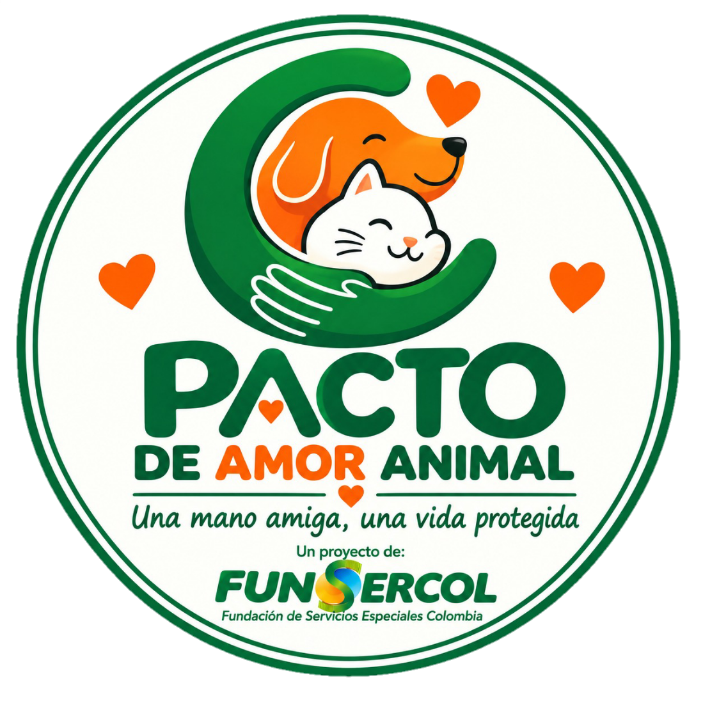

Pacto de Amor Animal
Una mano amiga, una vida protegida
Un proyecto de FUNSERCOL Colombia
Somos una entidad de apoyo que une esfuerzos para ayudar a animales y a las personas que dedican su vida a protegerlos. Promovemos apoyo transparente, responsable y dirigido a cada causa.
🐾 Nuestro propósito
- 🐶 Apoyar la alimentación de animales
- 💊 Apoyar medicamentos y tratamientos
- 🏠 Respaldar rescates y adopciones
- 🧺 Conseguir insumos y elementos necesarios
- 🤝 Apoyar a quienes cuidan y protegen animales
🔎 Transparencia
Cada ayuda busca llegar a la causa para la que fue solicitada. Coordinamos los aportes a través de Pacto de Amor Animal y procuramos mantener evidencia de la recepción y entrega de las ayudas.
🎁 Elige cómo ayudar
Ayúdanos a ayudar ❤️
💛 Donaciones
Si realizas un aporte, escríbenos para poder identificarlo y darle seguimiento.
🤝 ¿Quieres ser voluntario?
Puedes apoyarnos con tiempo, transporte, jornadas, difusión, organización de ayudas, alimentación animal u otras actividades.
Quiero ser voluntario🐾 Causas y necesidades
Las necesidades pueden incluir alimento, medicamentos, colchonetas, areneros, jaulas o rejillas, transporte, trasteos y mano de obra. Cada caso se coordina según sus necesidades reales.
Ver necesidades